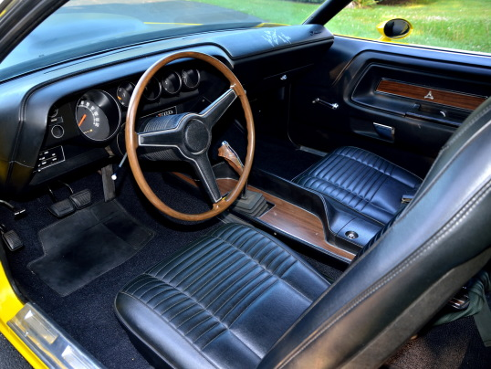

В автомобильной истории Dodge Challenger стал одним из культовых автомобилей. Дизайн авто разработал Karl Cameron.Dodge ,был спроектировал на основе машины компании General Motors под названием Plymouth Barracuda. У данной машины сильнее вытянутая колесная база и из-за этого салон получился более просторный. Инженеры особо потрудились над <железом> автомобиля. Так как в зависимости от мощности машины, ее стоимость может варьироваться от относительно дешевой до очень дорогой. Компания предоставилв несколько вариаций комплектации двигателя с различной мощностью. Базовая- Сhallenger Six, Средней мощности-Challenger V8, Спортивная-Challenger R/T.
Машина оснащалась двигателем Slant 6, мощностью в 225 л. с. На выбор предлагались 3 коробки передач. В этом списке значились 2 механические трансмиссии – 3- и 4-ступенчатая. Любителям же автоматических коробок предлагалась 3-диапазонная АКПП.
Благодаря увеличению колесной базы Dodge Challenger до 2 794 мм конструкторам удалось получить немалый довесок в отношении простора в салоне. Оснащение и качество используемых для отделки салона материалов сильно разнилось в зависимости от модификации авто. Это мог быть как и обычный пластик, так и деревянная отделка торпедо, руля и дверных карт.
| Характеристики | |
|---|---|
| Max Speed | 220 km/h |
| 0-100 | 6.2 sec |
| Engine power | 225 hp |
| engine volume | 7.2 литра |